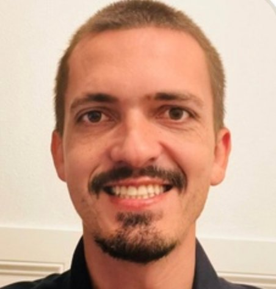
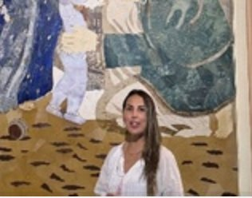
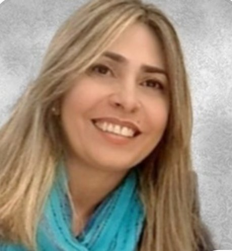
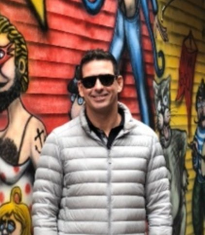

20
Projetos Ativos
4
Previstos Nov
7
Coordenadores
6
Áreas Transversais
Fases:
KCKickoff ClienteKIKickoff Interno (passagem de bastão)
Filtrar:
 Raíza
Raíza
 Bellmond
Bellmond
 Abílio
Abílio
 Jeferson
Jeferson
 Ariadne
✕ Limpar
Ariadne
✕ Limpar

LucasBruna
Jéssica
RaízaBellmondAbílioJefersonMayara

AnaAngelo

VeraAriadne
Fernando| Projeto | Resp. | Jan | Fev | Mar | Abr | Mai | Jun | Jul | Ago | Set | Out | Nov | Dez |
|---|
⚠️ Projetos previstos para novembro (*): Circo no Brasil 2ED (TCP), CODS (Vestas), ODS Cultural (Vivix) e Wilson & Sons — Teatro ODS. Condicionados à confirmação de pagamentos pelos patrocinadores até agosto/2026.
📌 Marcos do projeto: KC (Kickoff Cliente) = reunião formal de abertura com o patrocinador/cliente, marca o início oficial do projeto. KI (Kickoff Interno) = passagem de bastão PMO → Produção, quando o planejamento está 100% definido. Ambos são eventos pontuais (não fases) e aparecem como ícones na transição entre Mockup/T.Abertura e Engajamento.
Planejamento — Junho 2026
— projetos
Por Coordenador
Por Área / Setor
Detalhado / Semanas
🗓️ Calendário
🤝 Hands On
Fases:
Filtrar:
Raíza
Bellmond
Abílio
Jeferson
Ariadne
Lucas
Bruna
Jéssica
RaízaBellmondAbílioJefersonMayara
Ana
Angelo
Vera
AriadneFernando
✕ Limpar
Detalhado por semana, Junho/2026 (v1, Plano B): tarefas-mãe a fazer (abertas), o vivo do ClickUp comparado contra o baseline congelado. Atrasada mede contra hoje; escorregou mede contra o plano. Execução de campo fica no Calendário.
📷 Captação registro foto/vídeo (só quando há etiqueta)
👤 NTICS em campo presença NTICS (só quando há etiqueta)
Cor = projeto · execução é implícita (todo card é uma ação em campo)
🗓️ Espelho do ClickUp · ações de campo em jun/26. Eventos puxados das tasks com a etiqueta 📍execução. A cor identifica o projeto e o topo mostra número, foto do responsável e patrocinador. Captação e NTICS em campo são camadas independentes: aparecem só quando a etiqueta existe na tarefa (ausência é informação válida, não falta de preenchimento).
Hands On de Junho. Cada semana, a Clareza da Semana é gerada à parte (skill norteador-semana) e usada na reunião.
Depois da reunião, ela é arquivada aqui como snapshot completo (estrutura integral, não resumo). A semana corrente fica marcada como
ATUAL; as anteriores ficam congeladas.
🗂️ Arquivo por referência, escopo do mês. Este histórico guarda as semanas de junho; ao virar o mês, o arquivo do mês seguinte começa zerado. Cada semana abre o HTML standalone da Clareza em página própria (em tela cheia), mantido fora do painel para não pesar o mensal.
Para arquivar uma semana: gere a Clareza, salve o arquivo na mesma pasta e preencha o campo
file da semana em HANDSON_WEEKS. Slots sem arquivo aparecem como VAZIA até receberem o HTML.
Reconciliação com ClickUp · Fase 1.5
Em andamento
Direção da informação — onde estamos
1
Planejamento curado. Este artefato é o gabarito. 7 fases lineares + 1 marco (Kickoff Interno). 13 pessoas (7 coordenadores + 6 transversais). Mayara oficializada como coord do 124. CONCLUÍDO
2
Diagnóstico Fase 1.5. Auditoria de 16 listas-projeto contra o gabarito. Relatório gerado em 28/05. ~545 tarefas órfãs, 5 divergências de coordenação, 93 tarefas vencidas. CONCLUÍDO
3
Plano de ajustes no ClickUp. Lista priorizada de ações para sanear o ClickUp e alinhá-lo ao gabarito. Ver abaixo. VOCÊ ESTÁ AQUI
4
Regime — ClickUp como fonte da verdade. Com o ClickUp saneado, a direção se inverte: você atualiza o ClickUp e o planejamento se redesenha sozinho. aguardando saneamento
De-para de fases gabarito ↔ ClickUp (oficial)
| Fase Gabarito | Campo FASE no ClickUp | Observação | |
|---|---|---|---|
| LAB | → | Lab NTICS | Incubação interna |
| MOCKUP / T.ABERTURA | → | Planejamento + Kick-off | Desenho da operação + formalização com cliente (unificados) |
| KC Kickoff Cliente | → | (marco — não é fase) | Reunião formal de abertura com patrocinador · sugestão: criar etiqueta kickoff-cliente |
| KI Kickoff Interno | → | (marco — não é fase) | Passagem PMO → Produção · sugestão: criar etiqueta kickoff-interno |
| ENGAJAMENTO | → | Pré-Execução | Mobilização de público/parceiros |
| PRÉ-PRODUÇÃO | → | Prep.Op.Orç | Preparação operacional/orçamentária |
| EXECUÇÃO | → | Execução | Direto |
| FINALIZAÇÃO | → | Fechamento | Direto |
Plano de ajustes no ClickUp — ordenado por prioridade
Confrontado com o relatório de diagnóstico de 28/05. Princípio: ajustar o ClickUp para que ele se torne capaz de gerar o planejamento sozinho — não o contrário. Cada item identifica se é problema de tag, fase, nomenclatura, responsável ou estrutura.